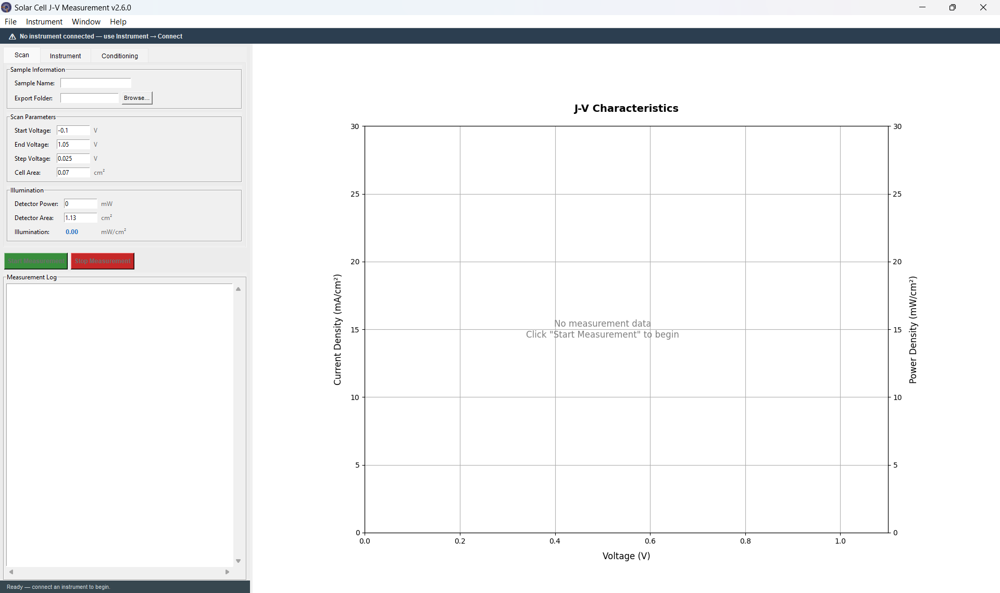
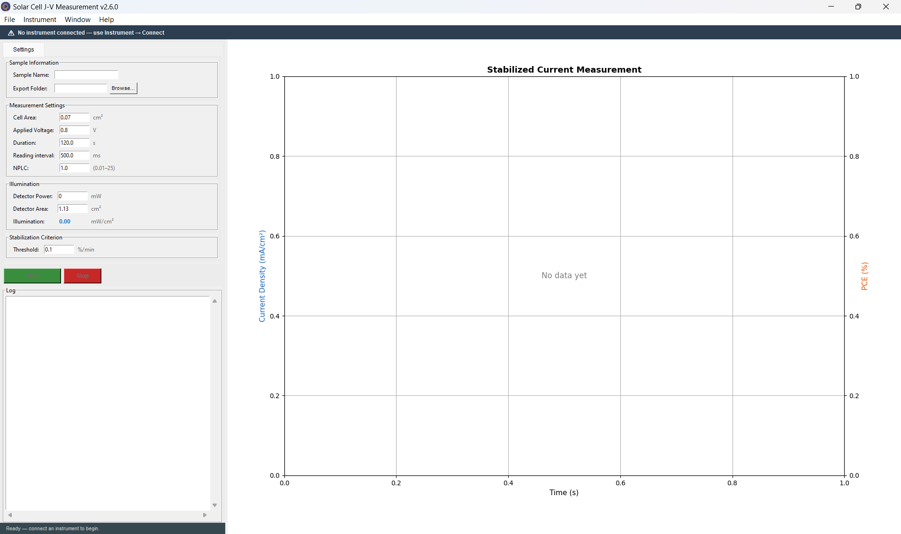
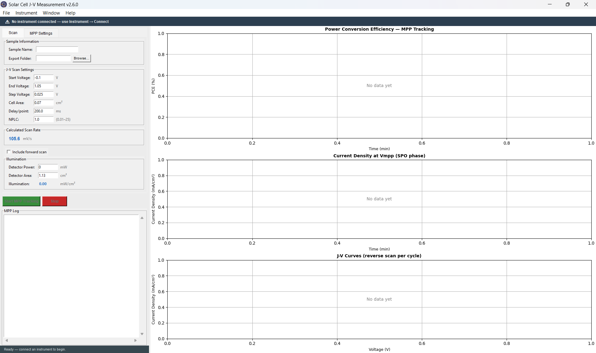
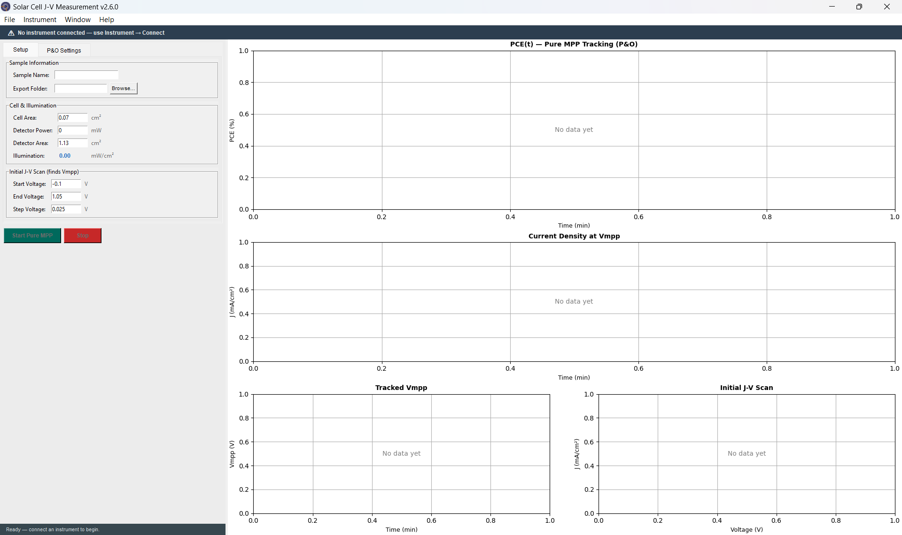
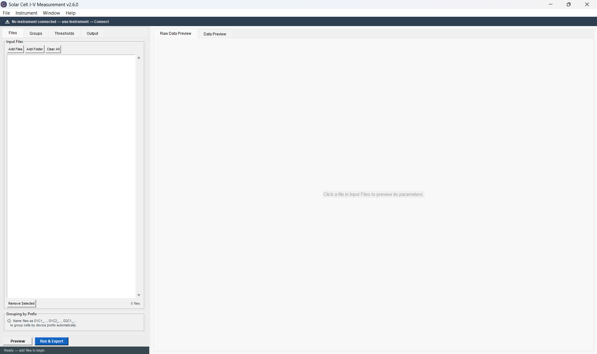

JV Measurement Software — User Documentation
Version 2.6.0 | Open-source characterization tool for perovskite solar cells
1. Overview
JV Measurement Software is an open-source Python application for automated characterisation of perovskite and other thin-film solar cells, built for use with a Keithley 2400 SourceMeter controlled via a GPIB-USB adapter. It provides four complementary measurement modes that together cover the full characterisation workflow recommended by international consensus protocols [Khenkin et al., 2020].
Measurement modes
| Mode | Shortcut | Purpose |
|---|---|---|
| J-V Measurement | Alt+F2 |
Forward and reverse voltage sweeps; extracts Voc, Jsc, FF, PCE, Rs, Rsh, and Hysteresis Index (HI) |
| MPP Tracking (JV-SPO) | Alt+F3 |
Cyclic J-V scans followed by Stabilized Power Output (SPO) phases at Vmpp; tracks efficiency evolution over time with periodic J-V diagnostics |
| Stabilized Current | Alt+F5 |
Holds cell at a fixed voltage and records current density over time; reports quasi-steady-state PCE and detects the stabilization point |
| Pure MPP Tracking (P&O) | Alt+F6 |
Continuous Perturb-and-Observe maximum power point tracking; records Vmpp, J, and PCE at every time step with no interruptions for J-V scans |
| Data Curation | Alt+F7 |
Batch analysis of multiple saved J-V files; applies quality thresholds, groups devices by composition, and exports curated statistics ready for Origin box plots |
Key features
- J-V scanning with configurable voltage range, step size, and timing (delay per point, NPLC); calculates all standard PV parameters automatically
- Pre-bias conditioning before the reverse scan for reproducible hysteresis measurements following best-practice protocols [Christians et al., 2015]
- Dark J-V measurement option within the J-V mode to characterise diode behaviour without illumination
- Stabilized Current / PCE measurement at a fixed bias voltage with automatic stabilization detection
- MPP Tracking in two protocols: JV-SPO cycling (with per-cycle J-V diagnostics) and pure P&O continuous tracking
- Data Viewer window for opening and plotting any previously saved Excel file, with metadata panel and interactive legend
- Data Curation (Alt+F7) — batch analysis of multiple J-V files with composition grouping, configurable pass/fail thresholds, per-group statistics, champion cell identification, and hysteresis summary; exports multi-sheet Excel ready for Origin
- All data exported to Excel (.xlsx) using a unified row1=headers / row2=metadata / row3+=data layout compatible with downstream analysis
- Scan rate input — toggle between Advanced mode (enter delay directly) and Scan Rate mode (enter mV/s target, delay auto-calculated)
- Auto-update via Help → Check for Updates — downloads and applies the latest release in place without reinstalling
- Built with Python/Tkinter — runs on Windows 10/11 without MATLAB or LabVIEW

2. System Requirements
Hardware
- Windows 10 or Windows 11 (64-bit)
- Keithley 2400 SourceMeter (or compatible 24xx series)
- KUSB-488B USB-to-GPIB adapter (Keithley/Tektronix)
- USB 2.0 port on the computer (avoid USB hubs)
- Solar simulator or controllable light source with calibrated reference detector
Software dependencies
| Package | Version | Install | Purpose |
|---|---|---|---|
| Python | 3.9+ (64-bit) | python.org | Runtime |
| pyvisa | ≥ 1.12 | pip install pyvisa | VISA / GPIB communication |
| numpy | ≥ 1.20 | pip install numpy | Array math, parameter extraction |
| matplotlib | ≥ 3.4 | pip install matplotlib | Live J-V and time-series plots |
| xlsxwriter | ≥ 3.0 | pip install xlsxwriter | Writing Excel output files |
| openpyxl | ≥ 3.0 | pip install openpyxl | Reading Excel files (Data Viewer) |
| mplcursors | ≥ 0.5 | pip install mplcursors | Hover tooltips in Data Viewer |
| playsound | optional | pip install playsound | Completion sound (falls back to winsound.Beep) |
| NI-VISA runtime | 2019 or later | ni.com/visa | VISA backend for GPIB |
| KI-488 driver | v4.0 (NI-compatible mode) | tek.com/keithley | KUSB-488B GPIB adapter driver |
3. Driver Installation
GPIB32.DLL) with the same filename as the
National Instruments DLL. Having both drivers simultaneously or installing them in the
wrong order causes silent DLL conflicts that prevent VISA from detecting any instruments.
Always follow the order below and restart after each major step.
- Disconnect the KUSB-488B from all USB ports.
- Via Control Panel → Programs → Uninstall, remove all of the following if present: NI-VISA, NI-488.2, NI GPIB, KI-488, Keithley I/O Layer, KUSB-488B drivers.
- In Device Manager, uninstall any remaining GPIB/KUSB entries (check "Delete the driver software").
- Restart the PC.
- Download from tek.com/keithley → Support → Software → search "KUSB-488B".
- Run
setup.exe. When asked for driver mode, select "NI command-compatible". Do not select "Keithley mode" (incompatible with PyVISA). - Complete the installation. Restart the PC before connecting the cable.
- Download NI-VISA from ni.com/visa (free; requires NI account).
- Install NI-VISA runtime only. Uncheck NI-488.2, NI-DAQmx, and all other components.
- Restart the PC.
- Connect KUSB-488B to USB. Connect GPIB cable to Keithley 2400 (powered on).
- Open KI-488 Configuration Utility. Confirm GPIB0 appears and the Keithley is detected at its address (default GPIB address 21).
- Send
*IDN?— response should beKEITHLEY INSTRUMENTS INC.,MODEL 2400,... - VISA resource address format:
GPIB0::21::INSTR
4. Software Installation
- Install Python 3.9+ from python.org. Check "Add Python to PATH" during installation. Use the 64-bit installer.
- Open a terminal in the project folder:
cd "path\to\jv-measurements"
- Install all dependencies:
pip install pyvisa numpy matplotlib xlsxwriter openpyxl mplcursors playsound
Ifplaysoundfails to install, omit it — the software falls back towinsound.Beep. - Launch the software:
python main.py
Automatic updates
The software checks for a newer version automatically 3 seconds after startup (silently, in the background) and can also be triggered manually via Help → Check for Updates.
When a newer version is available, a dialog offers to download and apply it automatically.
The update is downloaded as a ZIP archive from GitHub Releases and extracted directly over
the installation directory — no reinstallation or re-running of install.bat
required. Only updated files are overwritten; measurement output files saved in custom
folders are never affected.
5. Connecting the Instrument
- Launch
python main.py. - Go to Instrument → Connect…. The dialog scans all VISA resources
and queries each with
*IDN?to identify devices. - Select the Keithley 2400 entry (
GPIB0::21::INSTR) and click ✔ Connect. - The connection is persistent for the entire session. All four measurement modes share this connection. Disconnect via Instrument → Disconnect.
2-wire connection (default)
- Force HI (red) → counter-electrode (Au/Ag back contact)
- Force LO (black) → transparent front electrode (FTO/ITO)
4-wire connection (Kelvin sensing)
Use when accurate Rs is required. Enable via the Instrument Settings
panel. Connects two additional Sense terminals directly at the cell contacts, eliminating
cable resistance from the voltage reading.
Sends :SYST:RSEN ON to the Keithley.
- Force HI / Force LO: same as 2-wire above
- Sense HI / Sense LO: connect as close to the cell pads as possible
6. Interface Guide
Instrument status banner (dark top bar)
Shows the current connection state. Yellow warning = no instrument connected; measurement buttons are disabled. White text = instrument identified; measurement can proceed.
Mode switching
Five modes are accessible from the Mode menu or via keyboard shortcuts (Alt+F2, F3, F5, F6, F7). Each mode reveals its own panel of controls in the left pane. Only one mode can be active at a time. Switching mode does not disconnect the instrument.
J-V mode panel (Alt+F2)
Sample name, export folder, voltage sweep parameters, cell area, instrument settings, illumination input, pre-bias conditioning, and dark J-V option. Contains the main J-V plot area and measurement log.
MPP Tracking panel (Alt+F3)
Sample name, export folder, cell area, scan parameters, pre-bias option, illumination, total duration, SPO duration per cycle. Contains SPO plot and J-V per cycle overlay.
Stabilized Current panel (Alt+F5)
Sample name, export folder, cell area, applied voltage, illumination, duration, reading interval, and stabilization threshold. Contains a live dual-axis plot (J and PCE vs time).
Pure MPP Tracking panel (Alt+F6)
Sample name, export folder, cell area, perturbation step, interval, NPLC, delay, illumination, and initial scan parameters. Contains dual-axis plot (PCE and Vmpp).
Data Curation panel (Alt+F7)
Multi-file batch analysis tool. Four tabs: Files (load .xlsx files), Groups (define composition groups), Thresholds (set minimum quality thresholds), and Output (export filename and folder). The right panel shows a Raw Data Preview for the selected file and a summary table of all loaded cells with pass/fail coloring.
File menu
- Open Data File… — opens the Data Viewer window for any saved .xlsx file
- Export Measurement Log… — saves the J-V session log as plain text
7. Measurement Modes Overview
The four modes complement each other within a complete efficiency characterisation workflow. The order below reflects the recommended characterisation sequence for a new perovskite cell.
| Mode | Typical duration | Key output | When to use |
|---|---|---|---|
| Dark J-V (within J-V mode) | 1–5 min | Dark diode curve, Rsh estimate | First measurement; diagnoses shunting and contact quality before illumination |
| J-V Measurement | 2–10 min | Voc, Jsc, FF, PCE, Rs, Rsh, HI | Primary characterisation; always include forward + reverse scans for HI reporting |
| Stabilized Current | 1–5 min | Quasi-steady-state J and PCE at fixed V | Quick validation of dynamic J-V PCE; reports stabilized efficiency after transients decay |
| MPP Tracking (JV-SPO) | 30 min – 24 h | PCE vs time with periodic J-V diagnostics | Stability studies; efficiency evolution over time; per-cycle J-V parameter tracking |
| Pure MPP Tracking (P&O) | 5 min – 24 h | Continuous PCE and Vmpp vs time | Certified stabilized efficiency reporting; no J-V scan interruptions |
| Data Curation | seconds | Multi-sheet Excel with per-group statistics and composition comparisons | After collecting data from multiple devices; batch parameter extraction and statistical comparison between compositions; preparation of Origin-ready data for publication |
8. J-V Measurement Parameters Alt+F2
Starting point of the forward scan. Setting slightly below 0 V ensures Jsc plateau is fully captured and zero-crossing for Rsh extraction is reliable. Avoid values below −0.5 V (risk of degrading organic transport layers).
Should be slightly above the expected Voc to ensure the zero-crossing is captured. For typical FA/MA perovskites (Voc ≈ 1.0–1.15 V), use 1.1–1.2 V. Setting below Voc makes Voc extraction impossible.
Voltage increment between measured points. Smaller steps improve the accuracy of Jsc, Voc, and MPP extraction. Typical range for perovskites: 10–50 mV. The Scan Rate (mV/s) field updates automatically to reflect the effective rate with the configured step, delay, and NPLC.
The 20 ms is a fixed Python-side overhead per point. The displayed scan rate is saved in the Excel file.
Used to convert measured current (A) to current density (mA/cm²). A 5% area error propagates directly to 5% error in Jsc and PCE. When using an aperture mask, enter the mask opening area, not the total cell area.
Scan rate reference table
Brazil grid 60 Hz; 1 NPLC ≈ 16.7 ms. The 20 ms software overhead is included.
| Delay (ms) | NPLC | Time/point (ms) | Rate at 25 mV step | Use case |
|---|---|---|---|---|
| 50 | 0.5 | ~79 | ~316 mV/s | Fast hysteresis screening |
| 100 | 1.0 | ~137 | ~182 mV/s | Standard perovskite measurement |
| 200 | 1.0 | ~237 | ~105 mV/s | Cells with high ionic activity |
| 500 | 1.0 | ~537 | ~47 mV/s | Quasi-steady-state scan |
| 500 | 5.0 | ~604 | ~41 mV/s | Low-noise dark J-V scan |
9. Instrument Settings
:SOUR:DEL {value}Hardware delay set on the Keithley between applying a voltage step and triggering the ADC. More precise than a Python sleep because it is handled by the instrument firmware. For perovskites, 100–500 ms is recommended to allow slow ionic redistribution to partially settle before the current reading [Tress et al., 2015].
:SENS:CURR:NPLC {value}Integration time of the Keithley ADC. At 60 Hz, 1 NPLC = 16.7 ms. Higher NPLC averages out more 60 Hz noise at the cost of slower scan speed. Use NPLC 5–10 for dark J-V where currents are in the nA–μA range; NPLC 1.0 is sufficient for illuminated measurements.
:SYST:RSEN ON / OFFRemoves cable and contact resistance from the voltage measurement. Improves Rs accuracy by 0.5–2 Ω·cm² in typical setups. Recommended when comparing transport layer conductivities or when cable length is >1 m.
The Instrument Settings panel provides two complementary ways to control measurement timing:
- Advanced mode (default): enter Delay per point directly (milliseconds). The Scan Rate (mV/s) field is computed automatically and shown read-only, so you can verify the effective rate at a glance without arithmetic.
- Scan Rate mode: click the Scan Rate → toggle button
to switch. Enter a target scan rate in mV/s; the software back-calculates the delay as:
delay = (step_mV / rate_mV_s × 1000) − NPLC × 16.7 − 50 ms
The 50 ms constant accounts for GPIB overhead. The result is clamped to 0 ms when the formula yields a negative value. A⚠symbol is appended to the displayed scan rate when the delay was clamped, indicating the hardware cannot sustain the requested rate and the actual effective rate will be slightly slower.
Both modes write the same parameters to the Excel output: Delay per point → column U; Scan Rate → column AA.
10. Pre-bias Conditioning
Physical motivation
Perovskite absorbers are mixed ionic-electronic conductors. Mobile ionic species (primarily iodide vacancies VI+ and interstitial ions) redistribute slowly (seconds to minutes) in response to the electric field. If J-V scans begin from an unknown ionic state, the results are irreproducible.
Applying a forward bias slightly above Voc for 2–5 s drives ions to a well-defined accumulation state at both interfaces, ensuring all reverse scans start from the same ionic configuration. This makes the HI value reproducible and comparable between experiments [Christians et al., 2015].
Measurement sequence when pre-bias is enabled
Set 0.1–0.2 V above the expected Voc. For FA/MA perovskites with Voc ≈ 1.0–1.1 V, 1.2 V is appropriate. Avoid values far above Voc (>1.5 V for a 1.1 V cell) to prevent degradation.
Literature recommendation: 2–5 s [Christians et al., 2015]. High-ionic-density absorbers or thick films may need up to 10 s for full equilibration.
11. Running a J-V Measurement Alt+F2
Measurement sequence (automated)
Steps in grey are optional (can be enabled/disabled independently).
Measurement flowchart
Step-by-step procedure
- Turn on the Keithley 2400 and solar simulator. Allow the lamp to warm up ≥15–30 minutes before taking measurements.
- Connect the instrument: Instrument → Connect…
- Select mode J-V Measurement (Alt+F2) if not already active.
- Enter Sample Name and select Export Folder.
- Place the reference detector at the sample position and measure optical power. Enter the reading in Detector Power (mW). Verify Illumination ≈ 100 mW/cm² for 1-sun conditions.
- Set voltage range (start, end, step), cell area, delay, and NPLC. Verify the Scan Rate field shows the expected value.
- If measuring hysteresis: enable Pre-bias Conditioning and set voltage slightly above expected Voc.
- Connect the cell (Force HI → counter-electrode, Force LO → front electrode).
- Click Start Measurement, confirm the safety dialog, and click OK.
- The software executes the full sequence automatically. Results appear in the Measurement Log and J-V plot. The Excel file is saved immediately upon completion.
12. Stabilized Current Measurement Alt+F5
What it measures
The cell is held at a constant user-defined voltage while the current density and PCE are read at regular intervals. The measurement continues for the configured duration and automatically detects the point at which the cell output has stabilized.
Unlike a J-V scan, this measurement captures the quasi-steady-state response of the cell. Perovskite cells often show transient current behaviour immediately after a voltage step; the stabilized current measured after these transients decay is a more physically meaningful efficiency metric than the dynamic J-V scan value [Snaith et al., 2014].
Parameters
The constant voltage applied to the cell throughout the measurement. Typically set to the Vmpp obtained from a preceding J-V scan. The PCE is calculated as J(V) × V / Pin × 100 %.
Total measurement duration. A duration of 60–300 s is recommended for credible stabilized efficiency reporting [Khenkin et al., 2020].
Time between successive current readings. Shorter intervals provide finer time resolution but increase file size. 200–1000 ms is typical.
The current is considered stabilized when the rate of change of J drops below this threshold. When stabilization is detected, a green marker is placed on the plot and the time is saved to the Excel output. The threshold criterion is calculated over a rolling window of readings.
Live plot
The dual-axis plot shows current density J (left axis, blue) and PCE (right axis, orange) vs time in seconds. A vertical dashed green line is drawn at the detected stabilization time. The plot updates in real time during the measurement.

Measurement flowchart
13. MPP Tracking — JV-SPO Cycling Alt+F3
Protocol overview
The JV-SPO cycling protocol alternates between J-V diagnostic scans and Stabilized Power Output (SPO) phases held at Vmpp. Each cycle consists of:
Vmpp is determined from the reverse J-V scan of that cycle. The Keithley output
remains continuously ON throughout the entire experiment (turned off only in the
finally block). This avoids transient perturbations between cycles.
SPO phase behaviour
During the SPO phase, the voltage is held at Vmpp and current density J is read continuously at the configured delay. PCE is calculated as J × Vmpp / Pin. The time axis of the SPO plot uses accumulated SPO-only time — J-V scan durations are excluded — so consecutive SPO segments from different cycles appear side by side without gaps. Dashed vertical lines mark cycle boundaries.
Parameters
Total experiment duration. The tracker keeps cycling until this time is reached or Stop is clicked.
Duration of the SPO phase per cycle. Longer SPO phases give more representative stabilized efficiency data per cycle.
Used within the SPO phase to flag when the output has stabilized. Same criterion as in Stabilized Current mode.
Start voltage, end voltage, and step voltage for the J-V scans within each cycle. Shared delay and NPLC settings apply. These are independent of the main J-V mode scan parameters.
Live plots
- SPO plot: PCE (left) and J (right) vs accumulated SPO time. Cycle boundary markers shown as dashed vertical lines.
- J-V plot: reverse scan curves from each cycle overlaid, colour-coded by cycle number.
When to use this mode vs Pure MPP
Use JV-SPO cycling when you need periodic J-V diagnostics to track parameter evolution (Voc, FF, PCE, HI) during a stability experiment. Use Pure MPP (P&O) when you need continuous uninterrupted tracking without the perturbation of J-V scans.

Cycling flowchart
14. Pure MPP Tracking — Perturb & Observe Alt+F6
Algorithm description
The Perturb-and-Observe (P&O) algorithm is the most widely used method for maximum power point tracking in photovoltaic systems [Hohm & Ropp, 2003]. At each step, the algorithm applies a small voltage perturbation (±Δv) and compares the resulting power with the previous reading:
- If power increased → continue in the same direction (perturbation was toward MPP)
- If power decreased → reverse direction (perturbation was away from MPP)
This oscillates around Vmpp with an amplitude of ±Δv. A smaller Δv gives a more precise estimate of Vmpp at the cost of slower tracking response to changes in illumination or cell state.
Measurement sequence
The software first performs one reverse J-V scan to find the real Vmpp from the measured J-V curve, then enters the continuous P&O loop starting from that voltage. The time axis on the plot starts at t = 0 after the initial scan, so the plot shows only the P&O tracking phase.
Parameters
Voltage step Δv applied at each iteration. Smaller values (0.005–0.010 V) track Vmpp more precisely; larger values (0.01–0.02 V) respond faster to drifting Vmpp.
Time between P&O perturbations. The inter-step wait is broken into 50 ms chunks internally so the Stop button is checked frequently. Shorter intervals increase tracking speed; longer intervals allow more time for ionic equilibration after each step.
Voltage range (scan_start_v, scan_end_v) and step size for the initial reverse J-V scan. These determine the starting Vmpp estimate. The J-V scan result is also shown in the plot for reference.
Live plots
- PCE plot: PCE (%) vs time (min) from the P&O loop.
- Vmpp plot: tracked voltage Vmpp (V) vs time.
- J plot: current density J at Vmpp vs time.

P&O algorithm flowchart
15. Dark J-V Measurement Alt+F2 (within J-V mode)
What it measures
The dark J-V scan applies the standard forward + reverse voltage sweeps with the solar simulator shutter closed. Without illumination, the measured current reflects the dark diode characteristics of the device — exponential forward-bias injection current and leakage (shunt) current near zero bias.
Dark J-V measurements are used to:
- Estimate Rsh before illumination (the slope near V = 0 in the dark is a direct measure of shunting paths)
- Extract the ideality factor n and dark saturation current J0 of the diode
- Diagnose contact and transport layer quality independently of illumination uniformity
- Detect resistive heating artefacts in the illuminated measurement by comparison
How to use
Enable "Include Dark J-V scan" in the J-V measurement panel. When the measurement starts, the software performs the dark scan (shutter closed) first, prompts you to open the shutter, then proceeds with the illuminated scans.
Dark J-V data is saved to a separate Excel file (_Dark_JV_
in the filename) with the sheet name Dark_JV_Data.
No PCE, FF, or Voc values are extracted (those parameters have no physical
meaning in the dark).
current = −float(reading)) to place photocurrent in the positive
(power-generating) quadrant per standard solar cell convention. In the dark,
forward-bias current (injection) appears as negative J in the plot — this is correct.
16. Data Curation Alt+F7
Data Curation is a post-processing tool for batch analysis of multiple J-V measurement files.
It loads any number of previously saved .xlsx files, applies configurable quality
thresholds to exclude underperforming devices, organises cells into named composition groups
for comparative statistics, and exports a curated multi-sheet Excel workbook ready for
analysis in Origin or Excel.

Panel layout (four tabs)
Add individual .xlsx files (created by this software) or load an entire
folder at once. Files are listed in a scrollable list. Click any file to preview its raw
PV parameters instantly in the Raw Data Preview tab on the right.
Remove files individually with Remove Selected.
Define named composition groups to organize devices by composition,
treatment, or processing condition. Each group has a name (e.g., "Control", "Cs-doped")
and one or more device prefixes (e.g., "D1", "D2"). Prefixes are matched against the
filename stem using the pattern [A-Za-z]+\d+, so "D1_C1.xlsx", "D1C1.xlsx",
and "D1_2.xlsx" all match prefix "D1".
Click Auto-detect Groups to automatically create groups from the prefixes found in the loaded filenames — useful when files are already named consistently (e.g., A1_001.xlsx, A1_002.xlsx, B1_001.xlsx → groups "A1" and "B1").
If no groups are defined, all loaded cells are treated as a single group in the statistics.
Set minimum value thresholds for each PV parameter to exclude low-performing cells from the filtered analysis. Each threshold can be enabled or disabled independently. Cells failing any enabled threshold are highlighted in red in the preview table and excluded from the filtered export sheets.
| Parameter | Threshold type | Typical value |
|---|---|---|
| PCE (%) | minimum | 5–10% |
| Voc (V) | minimum | 0.8–1.0 V |
| Jsc (mA/cm²) | minimum | 10–15 mA/cm² |
| FF (%) | minimum | 50–60% |
| Rs (Ω·cm²) | minimum (cells below threshold pass) | e.g. 20 |
| Rsh (Ω·cm²) | minimum | 100–200 |
The scan direction to which thresholds are applied can be set to Forward scan, Reverse scan, or Both scans independently.
Enter a base filename and select the export folder, then click Export Curated Data to generate the Excel workbook.
Output Excel workbook structure
| Sheet | Contents | Filter applied |
|---|---|---|
Summary |
All loaded cells — Voc, Jsc, FF, PCE, Rs, Rsh, HI for both Fwd and Rev scans | None — all cells |
Filtered |
Same layout as Summary; only cells passing all active thresholds | Yes |
Statistics |
Per-group Mean / Std Dev / CV% / Max tables for Rev and Fwd scans (All and Filtered); champion cell per group (highest Rev PCE); per-group hysteresis summary (N, Mean HI, Std, CV%, % cells with HI <10%, % cells with HI <5%); threshold yield table | Both |
Rev_All, Rev_Filtered |
One block per PV parameter; one column per composition group. Each column contains the raw values for all cells in that group — reverse scan data. Ready for direct import into Origin for box plots or statistical tests. | All / Filtered |
Fwd_All, Fwd_Filtered |
Same layout as Rev sheets — forward scan data. | All / Filtered |
Typical workflow
17. Data Viewer
Opening the Data Viewer
Go to File → Open Data File…. A file dialog opens; select any
.xlsx file previously saved by the software. A new viewer window opens
alongside the main application — you can open multiple viewer windows simultaneously.
Within the viewer, click "Open Another File…" (top-right button) to replace the current file in the same window.
Supported file types
The viewer auto-detects the file type from the Excel sheet name:
| Sheet name | Data type | Plot |
|---|---|---|
MeasurementData |
Illuminated J-V | Forward + reverse J-V curves and power density curves |
Dark_JV_Data |
Dark J-V | Dark forward and reverse J-V curves |
StabCurrent_Data |
Stabilized Current (new format) | J and PCE vs time; stabilization marker |
StabilizedCurrent |
Stabilized Current (legacy format) | Same as above |
PureMPP_Data |
Pure MPP Tracking (new + legacy) | PCE and Vmpp vs time |
MPP_SPO |
MPP Tracking JV-SPO (new format) | PCE and J vs accumulated SPO time; cycle boundaries |
JV_Parameters |
MPP Tracking JV-SPO (legacy format) | Same as above |
Viewer layout
- Left panel (scrollable): metadata organized in collapsible sections: File, Measurement Data, Instrument Settings, and type-specific results sections (e.g., Forward/Reverse Scan and Hysteresis for J-V files; SPO Results and J-V Cycles for MPP files).
- Right panel: matplotlib plot with interactive features.
Plot interactivity
- Clickable legend: click any entry in the legend to show/hide that curve. Useful for isolating individual scans in multi-curve plots.
- Hover tooltips (mplcursors): hover over any data point to see its exact coordinates. Tooltips show line label, x-coordinate, and y-coordinate.
18. Excel File Format
All files use a unified three-row layout for easy programmatic parsing:
- Row 1: column headers (bold, bordered)
- Row 2: scalar metadata values (one value per relevant column; data columns in this row are empty)
- Rows 3+: time-series or voltage-sweep data arrays
File types and sheet names
| Measurement | Filename pattern | Sheets |
|---|---|---|
| Illuminated J-V | {name}_{timestamp}.xlsx |
MeasurementData |
| Dark J-V | {name}_Dark_JV_{timestamp}.xlsx |
Dark_JV_Data |
| Stabilized Current | {name}_StabCurrent_{timestamp}.xlsx |
StabCurrent_Data |
| Pure MPP Tracking | {name}_PureMPP_{timestamp}.xlsx |
PureMPP_Data |
| MPP Tracking JV-SPO | {name}_MPP_{timestamp}.xlsx |
MPP_SPO + MPP_JV + JV_Cycle_N |
MeasurementData columns (illuminated J-V)
| Column | Header | Row 2 value | Row 3+ value |
|---|---|---|---|
| A–C | Fwd V, Fwd J, Fwd P | — | Array data |
| D–F | Rev V, Rev J, Rev P | — | Array data |
| G | Cell Area (cm²) | ✓ | — |
| H–M | Fwd Voc, Jsc, FF, PCE, Rs, Rsh | ✓ | — |
| N–S | Rev Voc, Jsc, FF, PCE, Rs, Rsh | ✓ | — |
| T | HI (%) | ✓ | — |
| U–W | Delay, NPLC, 4-Wire | ✓ | — |
| X–Y | Pre-bias V, Pre-bias t | ✓ | — |
| Z | Instrument IDN | ✓ | — |
| AA | Scan Rate (mV/s) | ✓ | — |
The CLAUDE.md file in the repository documents the column mappings for all
other sheet types for developers maintaining the exporter and Data Viewer code.
19. Understanding J-V Results
Indicators of a good cell
- FF > 70%: square-shaped curve; low Rs and high Rsh.
- |HI| < 5%: forward and reverse curves nearly overlap.
- Jsc ≈ 20–23 mA/cm² for a 1.6 eV bandgap perovskite under 100 mW/cm² AM1.5G illumination.
- Smooth, monotonic curve without kinks or S-shapes.
Common problems visible in the J-V curve
| Observation | Likely cause | Diagnostic action |
|---|---|---|
| S-shaped curve (kink below Voc) | Extraction barrier at ETL or HTL; energy misalignment | UV pretreatment (TiO₂); check Spiro-OMeTAD doping |
| Low FF, high Rs (>10 Ω·cm²) | Series resistance in contacts or transport layers | Check contact pressure; enable 4-wire sensing |
| Low Rsh (<200 Ω·cm²) | Pinholes or incomplete perovskite coverage | Dark J-V scan; optical inspection |
| Large HI (>20%) | High mobile ion density; unpassivated traps | Compare with stabilized PCE from MPP tracking |
| Jsc mismatch between fwd/rev | Charge trapping at high scan speeds | Increase delay per point to 200–500 ms |
20. Photovoltaic Parameters
Current density at V = 0. Limited by bandgap, film thickness, and
carrier collection efficiency. Extraction: currents[argmin(|voltages|)].
Voltage at which net current is zero. Set by quasi-Fermi level
splitting; limited by non-radiative recombination.
Extraction: first zero-crossing via np.diff(np.sign(currents)).
Ratio of actual maximum power to the theoretical maximum Voc × Jsc.
Degraded by Rs, low Rsh, and recombination near MPP.
Extraction: argmax(voltages × currents).
PCE from a dynamic J-V scan is scan-rate-dependent. For certified reporting, always complement with stabilized PCE from MPP tracking or Stabilized Current measurement.
Extracted by linear regression near Voc: Rs = 1000 / |dJ/dV| (Ω·cm²).
Extracted by linear regression near V = 0: Rsh = 1000 / |dJ/dV|. Always reported as positive (physical resistance).
Definition following Kim & Park [2014]. Positive HI = normal hysteresis (RS > FS), typical for n-i-p architecture. Negative HI = inverted hysteresis (FS > RS).
21. Equivalent Circuit Model
The single-diode model represents a solar cell as a photocurrent source in parallel with a diode, a shunt resistance, and a series resistance.
Master equation
VT = kT/q ≈ 25.7 mV at 300 K. All current densities in mA/cm².
Parameter summary
| Parameter | Physical meaning | Typical value |
|---|---|---|
| Jph | Photogenerated current ≈ Jsc | 20–25 mA/cm² |
| J0 | Dark saturation current; lower J0 → higher Voc | 10−18–10−15 mA/cm² |
| n | Ideality factor: n=1 (radiative), n=2 (SRH), n>2 (interface/ionic) | 1.3–2.0 |
| Rs | Series resistance; compresses curve near Voc | 1–10 Ω·cm² |
| Rsh | Shunt resistance; tilts curve near Jsc | 500–10,000 Ω·cm² |
22. Hysteresis in Perovskite Solar Cells
Physical origin
Perovskite absorbers are mixed ionic-electronic conductors. Mobile ionic defects (iodide vacancies VI+, interstitial ions Ii−, typical concentrations 1015–1017 cm−3) migrate in response to the electric field during a voltage sweep. Because ions move orders of magnitude more slowly than electrons and holes, their redistribution lags behind the electronic response, creating a time-dependent internal field that depends on the scan direction [Tress et al., 2015; Snaith et al., 2014].
Normal vs. inverted hysteresis
| Type | Condition | HI | Common architecture |
|---|---|---|---|
| Normal | PCERS > PCEFS | HI > 0 | n-i-p with TiO₂/SnO₂ ETL |
| Inverted | PCEFS > PCERS | HI < 0 | p-i-n with PEDOT:PSS |
| Negligible | RS ≈ FS | |HI| < 2–3% | Well-passivated cells; slow scans |
Effect of scan parameters
- Faster scans → larger apparent HI. HI values are only comparable between measurements performed at the same scan rate.
- Slower scans → smaller HI. As scan rate → quasi-steady-state, the J-V curve becomes path-independent.
- Pre-bias conditioning standardises the ionic state before the reverse scan, ensuring reproducible HI values across sessions and laboratories.
Best practices for reporting
Per ISOS consensus [Khenkin et al., 2020]:
- Report forward and reverse scan parameters (Voc, Jsc, FF, PCE) for both directions
- Report scan rate (mV/s), pre-bias conditions, and HI
- Complement with stabilized PCE (MPP tracking or Stabilized Current ≥60 s)
23. Troubleshooting
- Check Device Manager for the KUSB-488B. A yellow exclamation mark indicates a driver problem.
- Open NI MAX — VISA resources should appear under Devices and Interfaces.
- If uncertain, repeat the full driver installation in Section 3 (clean → KI-488 in NI-compatible mode → NI-VISA → reboot → connect).
- Try a different USB port directly on the motherboard (avoid hubs).
:OUTP ON; usually from a partially-initialised state after a Python crash.*RST sent at the start of each measurement prevents this from persisting.
- Increase End Voltage to at least 0.1 V above the expected Voc.
- Verify the solar simulator shutter is open and illumination is ≥100 mW/cm².
- Check cell contact polarity (Force HI to counter-electrode).
- Verify the cell area value.
- Perform a dark J-V scan — a shunted cell will show significant current at V = 0.
- Inspect the cell optically for pinholes.
- TiO₂ ETL: UV-ozone treatment 15–20 min before perovskite deposition.
- Spiro-OMeTAD HTL: verify doping concentrations (LiTFSI, Co complex).
- Test a known-good reference cell to confirm the issue is the device, not the system.
- Reduce the perturbation step to 0.005–0.010 V.
- Increase the step interval to 500–1000 ms for ionic-active cells.
- Run an initial J-V scan at a slow scan rate to verify the MPP region is well-defined before starting P&O tracking.
mplcursors not installed.- The Data Viewer supports both new and legacy formats — check the terminal for the specific error message to identify the mismatch.
- Install mplcursors:
pip install mplcursorsin the correct Python environment. - Verify the file is a valid
.xlsxfile with one of the supported sheet names (see Section 16).
- Run from terminal (
python main.py) to see the full Python traceback. - Check PyVISA version:
pip show pyvisa— should be ≥ 1.12. - Verify GPIB address on the Keithley front panel matches the VISA resource address.
- Use Instrument → Disconnect and reconnect to reset the session.
24. References
-
H.-S. Kim, N.-G. Park, Parameters Affecting I–V Hysteresis of CH3NH3PbI3
Perovskite Solar Cells: Effects of Perovskite Crystal Size and Mesoporous TiO2 Layer,
J. Phys. Chem. Lett. 5 (2014) 2927–2934.
https://doi.org/10.1021/jz501392m
— Source of the Hysteresis Index (HI) formula used in this software. -
J.A. Christians, J.S. Manser, P.V. Kamat, Best Practices in Perovskite Solar Cell Efficiency
Measurements. Avoiding the Error of Making Bad Cells Look Good,
J. Phys. Chem. Lett. 6 (2015) 3808–3814.
https://doi.org/10.1021/acs.jpclett.5b00289
— Basis for pre-bias conditioning protocol, stabilized PCE measurement recommendation, and best-practice scan parameters. -
H.J. Snaith, A. Abate, J.M. Ball, G.E. Eperon, T. Leijtens, N.K. Noel, S.D. Stranks,
J.T.-W. Wang, K. Wojciechowski, W. Zhang, Anomalous Hysteresis in Perovskite Solar Cells,
J. Phys. Chem. Lett. 5 (2014) 1511–1515.
https://doi.org/10.1021/jz500113x
— First systematic report of J-V hysteresis in perovskite cells; motivates stabilized power output (SPO) measurement. -
W. Tress, N. Marinova, T. Moehl, S.M. Zakeeruddin, M.K. Nazeeruddin, M. Grätzel,
Understanding the rate-dependent J–V hysteresis, slow time component, and aging in
CH3NH3PbI3 perovskite solar cells: the role of a compensated
electric field,
Energy Environ. Sci. 8 (2015) 995–1004.
https://doi.org/10.1039/C4EE03664F
— Physical model for ionic-origin hysteresis; basis for scan-rate-dependent HI discussion and recommended delay times. -
M.V. Khenkin, E.A. Katz, A. Abate, et al., Consensus statement for stability assessment
and reporting for perovskite photovoltaics based on ISOS procedures,
Nat. Energy 5 (2020) 35–49.
https://doi.org/10.1038/s41560-019-0529-5
— ISOS international consensus on stability testing protocols; basis for stabilized efficiency reporting requirements used in this software. -
G.A. Nemnes, C. Besleaga, A.G. Tomulescu, I. Pintilie, L. Pintilie, K. Torfason,
A. Manolescu, Normal and Inverted Hysteresis in Perovskite Solar Cells,
J. Phys. Chem. C 121 (2017) 11207–11214.
https://doi.org/10.1021/acs.jpcc.7b04248
— Classification and physical interpretation of normal vs. inverted hysteresis. -
D.P. Hohm, M.E. Ropp, Comparative study of maximum power point tracking algorithms,
Progress in Photovoltaics: Research and Applications 11 (2003) 47–62.
https://doi.org/10.1002/pip.459
— Systematic comparison of MPPT algorithms including Perturb-and-Observe; theoretical basis for the P&O implementation in the Pure MPP Tracking mode. -
M.A. Green, Solar Cells: Operating Principles, Technology and System Applications,
Prentice-Hall, Englewood Cliffs, NJ, 1982.
— Foundational reference for the single-diode equivalent circuit model and definitions of Jsc, Voc, FF, Rs, Rsh. -
PVEducation.org, Shunt Resistance and Series Resistance.
https://www.pveducation.org
— Online reference for parameter extraction methods and device physics.